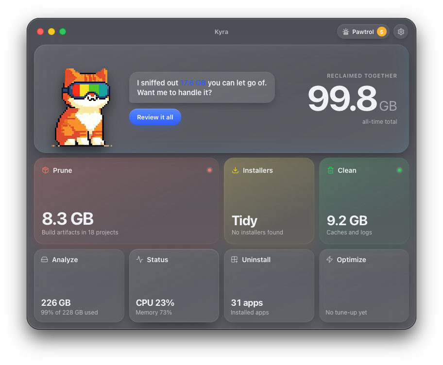
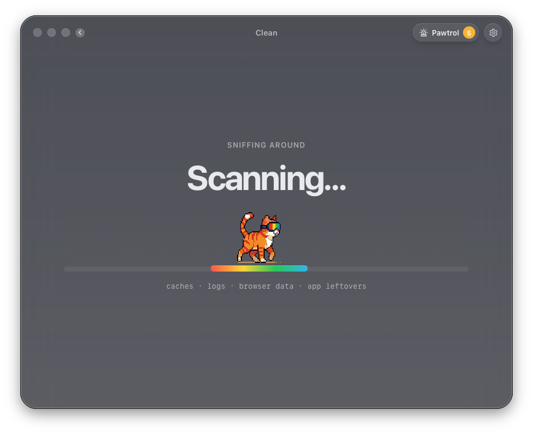
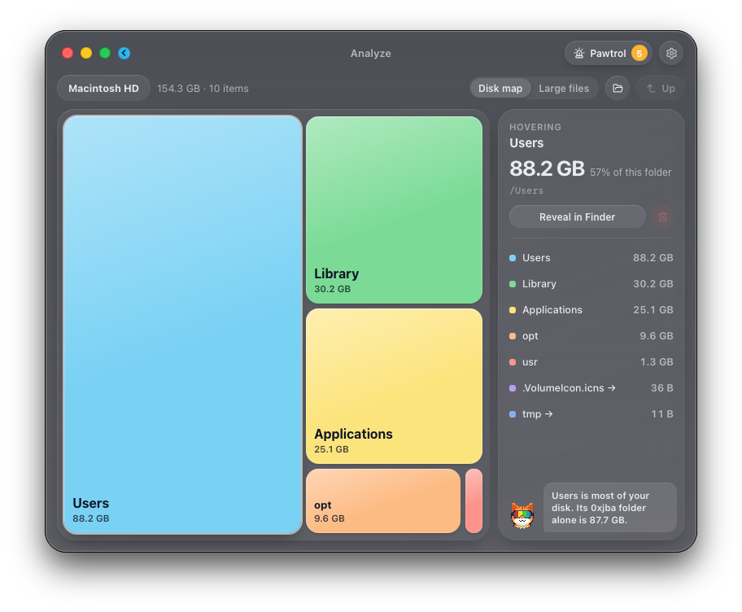
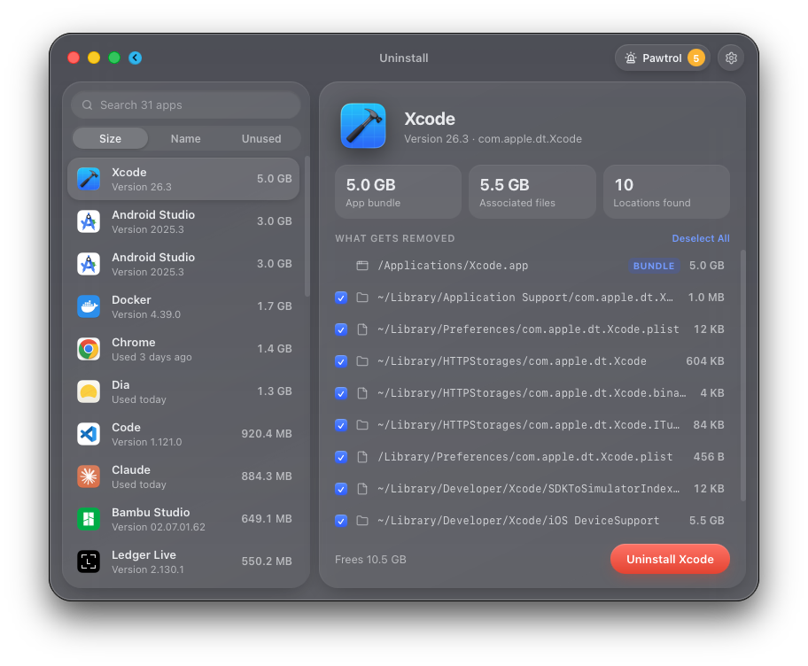
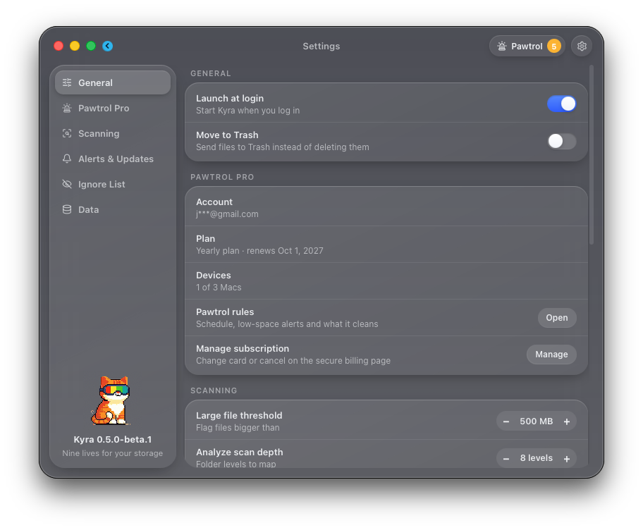
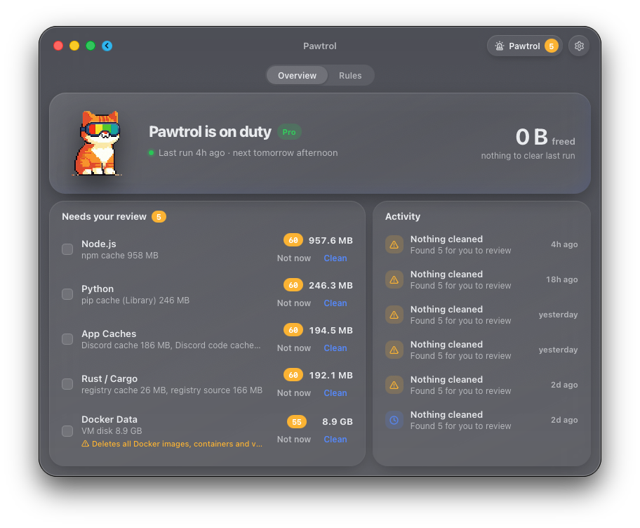
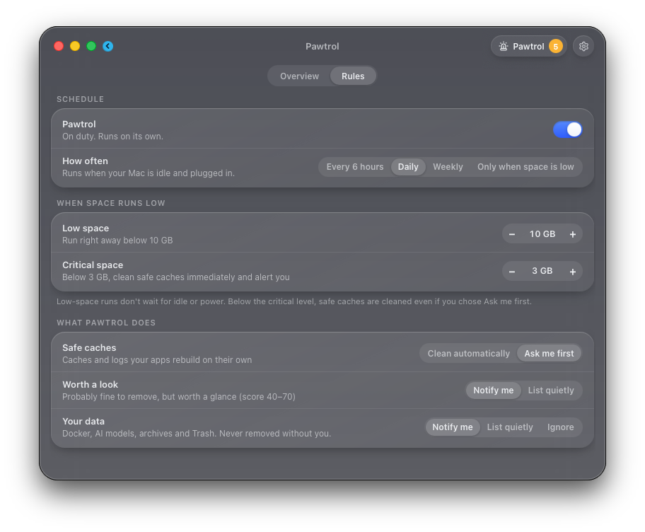

Nine lives for
your storage.
Hunts down the junk hoarding your disk space. Caches, logs, orphaned files, forgotten installers, bloated dev folders. Just a cat that keeps your Mac clean.
Download beta
Hunts down the junk hoarding your disk space. Caches, logs, orphaned files, forgotten installers, bloated dev folders. Just a cat that keeps your Mac clean.
Download beta
It's not about cleaning your Mac.
It's about never worrying about storage again.
Clean, optimize, monitor, and manage. Without the bloat.
330+ rules for system, app and developer caches, logs and leftovers from apps you removed. Caches from 15 browsers, including Safari, Chrome, Arc, Firefox, Brave and Zen. Your tabs, passwords, extensions and history are never touched, only their caches.
Remove apps with their hidden support files, Homebrew apps included. Data that outlives an app, like wallets, message history or backups, stays put under "Kept on your Mac".
50+ build artifact types: node_modules, target, __pycache__, .build, venvs and more. Sort and filter by how long each project has sat idle. Only real build output, never your source.
Scans on its own for leftover .dmg, .pkg, .iso and .xip files across Downloads, Desktop, Documents, Mail, iCloud Drive and Homebrew. Only installers you downloaded.
24 maintenance tasks: flush DNS, rebuild LaunchServices and Spotlight, vacuum databases, audit login items. Pick what you need, run in one click.
A disk map plus a new Large files view. See exactly where your space goes, drill in, reveal or remove.
CPU, memory, disk, network, battery, thermals and top processes. A glanceable system monitor in real time.
Not sure what's safe to delete? Opens ChatGPT with a summary of your scan for a second opinion, only when you click it.
Every module shares one calm, glassy window. Real screenshots from the beta.




Pawtrol is Kyra's autonomous agent. It curls up in your menu bar and keeps watch over your disk on a schedule you choose, cleaning what's safe on its own and asking before anything risky. You don't even have to open Kyra.
$0.99/month or $9.99/year · cancel anytime
Optional. Subscribe from the Pawtrol page inside Kyra.


Every delete in Kyra, from Clean to Uninstall to Pawtrol, passes through the same guards first. Inside protected data, only regenerable cache folders can go.
Open tabs, sessions, passwords, cookies, extensions, history and bookmarks. Only browser caches are cleaned.
SSH and GPG keys, password stores, and cloud and developer credentials.
Wallet apps and data folders for Bitcoin, Ethereum, Monero, Lightning and more.
Message history, mail, contacts and calendars, in Apple's apps and third-party chat apps.
Device backups stay where they are, along with virtual machines and media libraries.
iCloud Drive, Desktop and Documents in iCloud, Dropbox, Google Drive and others. Deleting there would delete on every device, so Kyra never does.
Git repositories, databases, notebooks and note vaults. Prune removes build output only, never source.
Unsaved and auto-saved documents, notes and game saves.
When you uninstall an app, data worth keeping is listed under "Kept on your Mac" instead of deleted.
The guards don't live in one screen. Clean, Prune, Installers, Uninstall, Analyze, Optimize and Pawtrol all ask them before removing a single file, and a folder that contains protected data is refused as a whole. The guards are covered by automated tests.
Turn on Move to Trash during setup or in Settings, and what Kyra removes goes to the Trash so you can put it back.
Yes. Kyra and every cleaning tool in it are free and open source under the MIT license, with no trials or limits. Pawtrol is optional, at $0.99/month or $9.99/year.
Kyra will not delete browser profiles, passwords, crypto wallets, message history, device backups, project folders or anything synced to iCloud, only the caches inside them. How Kyra protects your data.
No analytics, no tracking. Kyra goes online to check for updates and, if you subscribe, for Pawtrol's license check and scoring, which sends category names and sizes (like "npm cache, 955 MB"), never your files or file names. Ask AI opens ChatGPT only when you click it. Privacy policy.
Kyra is free, so refunds only apply to Pawtrol: a full refund within 14 days of any payment, no questions asked. See the refund policy.
Any Mac with Apple Silicon (M1 and later) running macOS 11 Big Sur or later.
The beta has the full feature set, and the data guards are on for everything. If something looks off, open an issue on GitHub.
Download the Kyra beta. It takes less than a minute.
Download beta